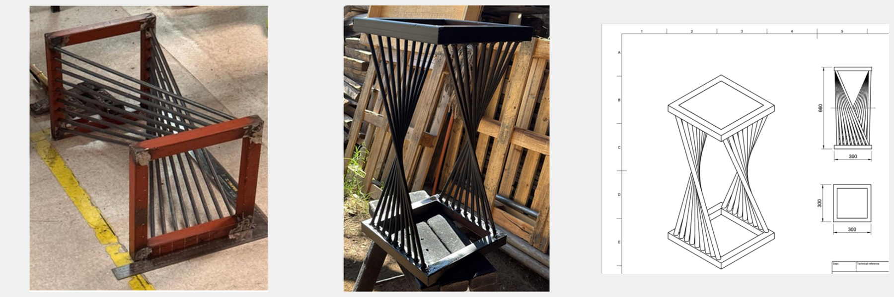

Project
Design and manufacture a functional structural element capable of supporting high loads without mechanical failure.
A small bench was designed from scratch using CAD modeling and technical drawing generation. Appropriate structural material was selected, cutting, assembly, and welding processes were carried out, and its structural resistance was verified through load testing.
Cutting and assembly processes, welding of each part of the structure, and construction of the final product.
A functional small bench with adequate mechanical strength to support high loads was obtained.